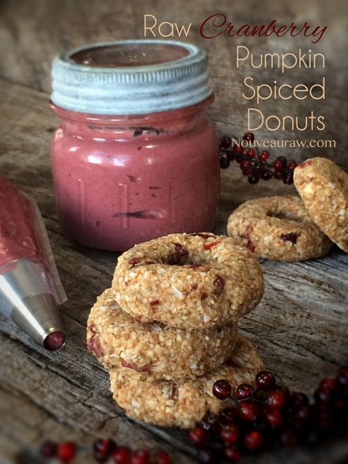
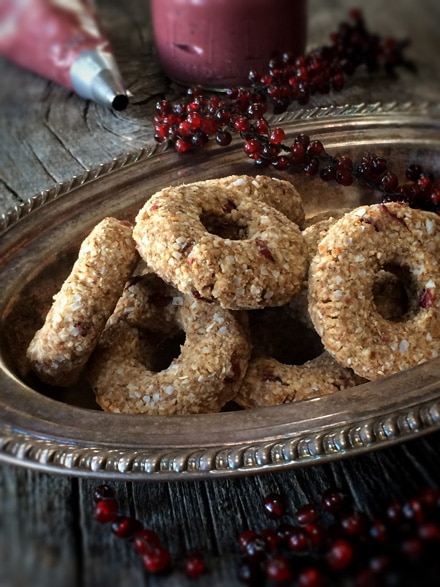
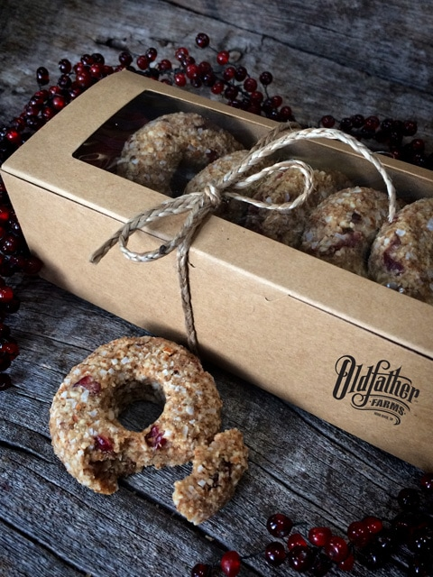
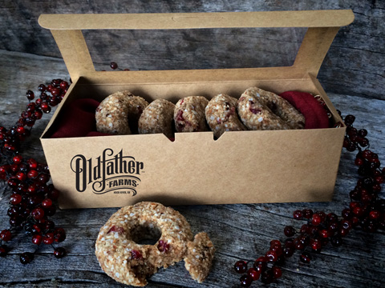
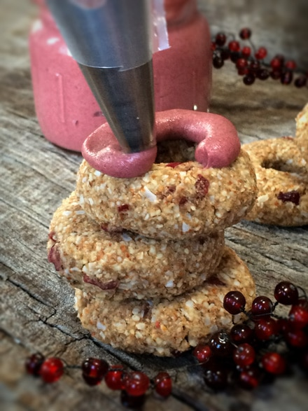
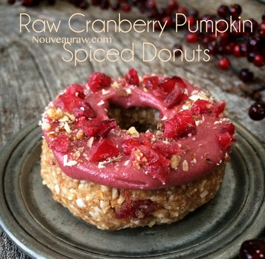
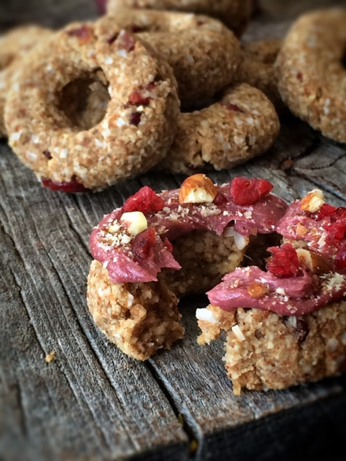

Cranberry Pumpkin Spiced Donuts

~ raw, vegan, gluten-free ~
These donuts can be enjoyed right away, or you can pop them into the dehydrator for 4-6 hours to give them a firmer exterior and to enhance the flavors by letting the warm air permeate the donuts, thus melding the ingredients together.
The cranberries add a wonderfully sweet, chewiness to the donut, and the pumpkin spice skids in under the radar offering up a warming flavor note. But the one ingredient that really makes my taste buds fall over and swoon are the raw coconut crystals. They are the twin sister to brown sugar, but this sister is the healthy one!
Raw coconut crystals are made from… coconut sap. This sap is very low glycemic (GI of only 35), diabetic-friendly, is an abundant source of minerals, 17 amino acids, vitamin C, broad-spectrum B vitamins, and has a nearly neutral pH.
Coconut crystals are made from 100% pure coconut tree sap that is grown without chemicals, pesticides, or herbicides. They are gluten-free, unbleached, unrefined, GMO-Free and vegan. Oh, and let’s not forget this natural sap, is a raw, enzymatically alive product. It is low-temperature vacuum evaporated only to remove excess moisture and allow for crystallization. By contrast, most brown sugar is boiled at temperatures up to 221 degrees F.
So as you can see, there are many great benefits to using raw coconut crystals… taste wise and health wise. If you haven’t tried it yet, I encourage you to do so.
 Ingredients:
Ingredients:
Yields 13 donuts
Preparation:
- Place the coconut in the food process, fitted with the “S” blade. Process until it breaks down to a small crumble. Pour into a medium-sized bowl. Do this same process with the almonds.
- Add to the bowl; coconut flour, coconut sugar, cinnamon, and pumpkin spice. Mix all the dry ingredients together.
- Add the date paste, coconut oil, cranberries, and vanilla. With your hands, mix the batter together.
- If the batter doesn’t stick together well when pinched, add 1 Tbsp of water at a time, until it does so.
- With a 2 Tbsp ice cream scoop, level off each portion and roll into a ball.
- Flatten the ball on a cutting board.
- Using a small cookie cutter, remove the center… creating a donut hole! :) Now you have your donut shape.
- Dehydrate at 115 degrees (F) for 4 hours to dry the outside, leaving the inside moist.
- OR… skip the drying process, enjoy right away or place in the fridge for a few hours to chill and firm up.
- Store in an airtight container on the counter (if dehydrated) or in the fridge.
- Optional: frost with Raw Ruby Valentine Frosting
The Institute of Culinary Ingredients™
- Raw Coconut Crystals add a “brown sugar” flavor to a recipe. Read about it (here).
- Why do I specify Ceylon cinnamon? Click (here) to learn why.
Culinary Explanations:
- Why do I start the dehydrator at 145 degrees (F)? Click (here) to learn the reason behind this.
- When working with fresh ingredients, it is important to taste test as you build a recipe. Learn why (here).
- Don’t own a dehydrator? Learn how to use your oven (here). I do however truly believe that it is a worthwhile investment. Click (here) to learn what I use.







© AmieSue.com